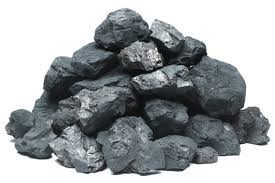
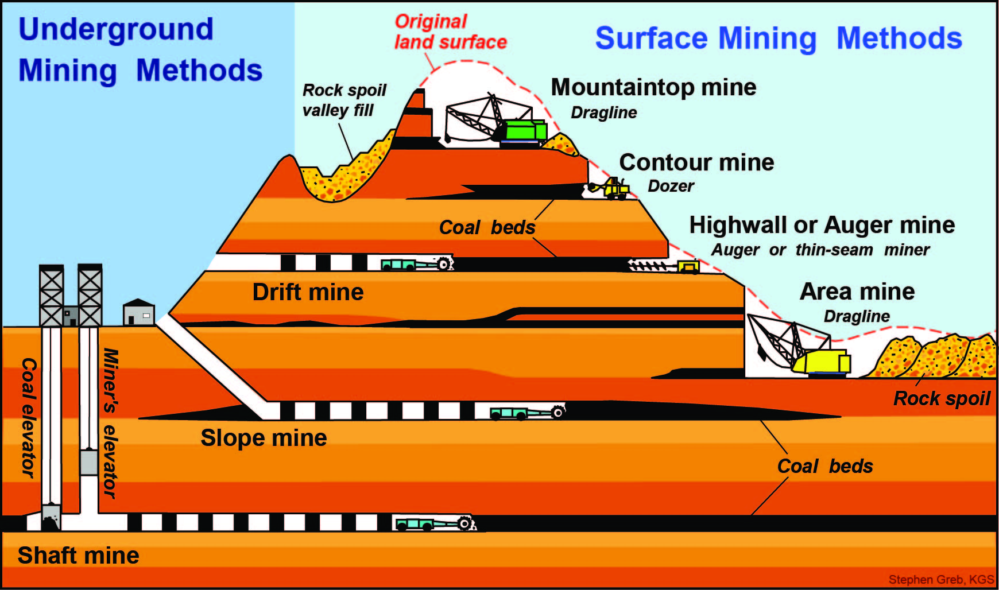
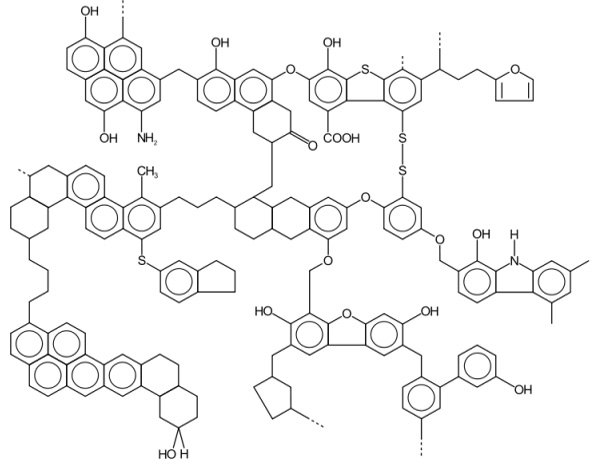
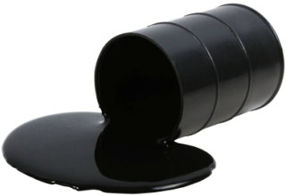
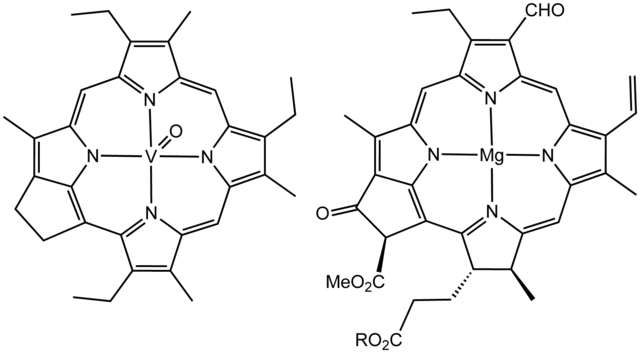
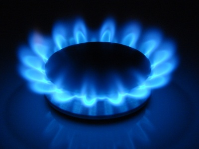
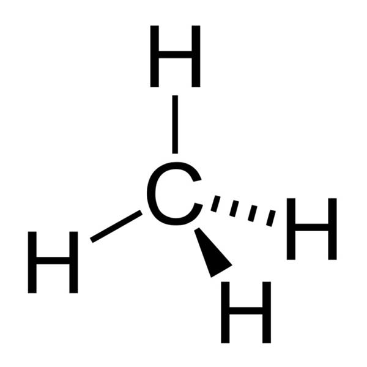

Learn more about natural gas, a flammable gas found undergroud!
Coal is a fossil fuel formed from the carbonization of organic matter - a process which takes millions of years! It is a combustible black or dark brown rock found mainly in underground deposits and commonly used as fuel. Coal has many important uses worldwide such as its role in steel production and the generation of electricity.With billions of tons consumed annually, it is imperative that scientists truly understand the processes and effects of coal. Scientists have thoroughly studied coal for centuries; however, there is so much more to improve upon in terms of maximizing its efficiency while additionally minimizing its environmental impact.

Explore the map below to learn where coal is found in the United States.
The Extraction of Coal
Surface Mining
Surface mining, as the name suggests, is mining which takes place closer to the surface. This method of mining is prefered as up to 90% of the coal can be removed from the coal deposits (coal beds). It is costs a lot less money and more coal can be extracted...so why is there another method? Unfortunately, a lot of coal is large deposits deep underground, and the surface mining method cannot be used. Therefore, underground mining must be used (Again, as the name suggests, this type of mining occurs deep underground).
< br/>

Underground Mining
Room and Pillar Mining
Room and pillar mining is the example of underground mining displayed in the illustration below. Engineers extract portions of the coal which form “rooms” and leave some coal to form “pillars” which prevent the roof from collapsing. As you can probably tell, it absolutely essential that they takes as much coal as they can without it becoming too dangerous. The downside to this method is that only 40% of the coal can be extracted. This percentage is less than half compared to surface mining but it is to be expected considering how far underground the coal is located.
Longwall Mining
Longwall mining requires careful planning but it can result in up to 75% of the coal being extracted. This a LOT more compared to room and pillar mining! Hydraulically powered supports temporarily hold the roof from collapsing (they have to be super strong to hold the intense weight!) while the coal is extracted. Once the coal has been extracted, the roof is allowed to collapse. New technology and knowledge regarding coal extraction has allowed coal to be mined efficiently and in large masses. Since surface mining is easier and more cost effective, it is preferable but as more and more coal has been extracted from the surface, the amount of coal located near the surface has significantly depleted, and it has forced many people to mine underground. There is a lot of coal deep underground but there is no point mining it unless it is in deposits large enough that it can still make money. When coal starts to run out (not in the near time future), we will be forced to mine underground in harder places causing the prices to significantly increase. Hopefully, at that time, we have developed more efficient mining methods and hopefully they have as straight forward names as the present mining methods!
Firstly, the coal is transported from the coal mines to energy plants. These energy plants are always located near a body of water such as a river or ocean because the plants consume an enormous amount of water in generating steam (similar to nuclear plants). It is cheaper and easier to have a large supply of water on demand so you don’t have to transport thousands of gallons of water on a regular basis. Once the coal arrives, it is deposited into a massive coal supply which hasn’t really changed since it was mined.
Step 2 - Combustion of Coal
C(s) + O2(g) → CO2 (g) ΔHc = -341 KJ/mol
The coal is often transported using a conveyor belt of some sort to a grinder.This is when chemistry’s role in the process starts to become obvious. The grinder breaks the rocky coal into a dusty powder. Why? Well it is simple! Often, when producing large quantities of products in industry, simple knowledge from reaction kinetics can be used to speed up the reaction. This is an excellent example. The coal is grinded into a powder to increase the surface area. Therefore, when the combustion reaction takes place, the powder can react faster producing more heat and as little waste as possible. The powdered form of the coal is then blown into the furnace (boiler). This is where the coal is burned.
From looking at the balanced chemical reaction, we can determine what we need for the reaction to happen and what products will form once the reaction takes place. The reaction shows that the coal furnace needs to have continuous supply of oxygen so that the reaction can take place. The combustion of coal converts the chemical energy inside the coal into thermal energy. The standard heat of combustion is quite exothermic so a lot of thermal energy is produced( = –393.5 kJ/mol). There are also two other unwanted products being formed; ash and carbon dioxide. The carbon dioxide rises to the top of the furnace into a pipe that leads to the outside air. Before the carbon dioxide leaves the furnace, it enters a section (in the diagram it is labeled as the flue gas cleaning) that cleans out the gases that are being emitted. This makes it so the air surrounding the plant is not polluted. It should be noted that carbon dioxide is not the only gas being emitted. Other toxic gases such as sulfur dioxide are present since the coal is not pure (in other words coal is often mixed with sulfur and other elements). The second unwanted product, ash, is removed from a hole at the bottom and is typically
Step 3 - Vaporization of Water
H2O(l) → H2O(g) ΔH = +44 KJ at STP
This second reaction takes place in the furnace.
Inside the furnace, there is a pipe filled with clean water. The immense heat caused by the burning of the coal is used to vaporize the water into steam. The water is in pipes so that vaporization of water and the combustion of coal do not interfere with each other. The pipes need to be made of a metal that can conduct the heat from the combustion of the coal. Most of the time, metals like copper are used (also used in frying pans) because they “transfer” the heat from the combustion to the water with as little interference as possible. The hot steam rises and makes its way towards the generator (or turbine).
Step 4 - The Turbine/Generator
The steam creates a lot of pressure causing the blades of the steam turbine to spin so the kinetic energy is converted to mechanical energy. This spinning motion creates electricity similar to how a wind turbine produces electricity. The turbine is connected to a generator so that when the turbine spins, so does the generator. The generator uses an electromagnetic field to convert this mechanical energy into electrical energy.
In conclusion, the chemical energy in the coal is converted to thermal energy in the combustion of coal and the thermal energy is converted into mechanical energy in the turbine which is finally converted to electrical energy in the generator which can finally be used to power our homes.
Structure of Coal

The formation of coal is one that spans over 300 million years! A long time ago, way before the age of dinosaurs, vegetation such as plants and trees would die and eventually sink to the bottom of swamps and bogs. This build-up of sediments with the combination of the movement of Earth’s crust allowed a revolutionary chemical reaction to occur - coalification. This is when the buried sediments are heated and crushed under extreme pressures and temperatures creating physical and chemical changes in the vegetation. The quality of the coal produced depends on the conditions of the reaction and the length of the reaction. At first, the peat is transformed into Lignite, which has the lowest carbon content but as the reaction proceeds, the content of carbon becomes richer and thus more energy can be extracted per pound!
The type of coal is determined by the amount of carbon in the coal - the more carbon, the more energy can be produced.
Safety and the Environment
Environmental Effects of Coal
Coal, unfortunately, has many negative environmental side-effects. Coal is especially harmful when concentrated with chemicals like sulfur which ultimately produce acid rain and affect ecosystems across the globe. Additionally, the combustion of Coal heavily produces CO2 and sometimes even the deadly CO!
The problem with things like coal is that they are not pure. Most coal is dirty (it has a lot of impurities mixed in it) so when the coal is combusted to form energy, lots of toxic fumes are emitted. Scientists are still working on ways to minimize these drawbacks but it is extremely difficult to prevent it. Some coal is more “dirty” than others so mining the less dirty coal first is a temporary solution until better solutions have been discovered.
Safety of Coal
While the combustion of coal and the harnessing of energy in the 21st century is all very secure, coal mining is notoriously known for being extremely dangerous! According to the NMA, Coal fatalities have decreased by a fold of 2 over the past 18 years. In the industrial revolution, many workers worked in the presence of the toxic fumes emitted from coal. These coal fumes can cause many lung cancers and can definitely shorten the lifespan of humans to remarkable amounts when large periods of time spent around them. Extracting the coal used to be incredibly dangerous and many people have died in coal mines. Especially, once people start going deep underground, mine shafts can collapse either causing instant death or by trapping people underground. Fortunately, careful planning has now made extracting coal very safe. In less developed countries, however, the safety of the coal mines is sacrificed in order to make it cheaper.
Oil, the most utilized fossil fuel in the world, takes it form in many states and shapes. However, there is one thing that does not really change - that is its chemical composition. Oil is essentially a combination of various hydrocarbons comprised of hydrogen, carbon, and oxygen varying in amounts per substance. Petroleum, oil in its liquid form, appears as dark and viscous solution, and is often referred to crude oil. In its solid form, it appears as asphalt and in its somewhat solid form, it appears as a tar-like mixture.Oil is used in every aspect of our lives. This volatile substance is used to fuel transportation, to make plastic, to heat homes, to fertilize vegetation, and produce electricity!

Explore the map below in order to learn where oil is located in the United States.
The Extraction of Oil
Before any oil can be extracted from the ground, the oil field must be located. There are many methods to do so; mostly involving the use of seismic waves and explosions! As soon as the oil has been located, the drilling site must be prepared. Engineers must “scout” the location to ensure maximum safety and efficiency. The oil company must also fill out legal issues before any oil is extracted. As you can tell, there is lot of work that goes into this and we haven’t even talked about extracting the oil yet - this all just the preparation for it. Also, the oil company must prepare the land around the digging site and they must start to dig the main hole. Meanwhile, the oil rig equipment must be set up around the main hole and be ready to start drilling. After all this has happened, the drilling process can begin but it does not end there...in fact it only begins! The drill penetrates the earth’s crust digging deeper and deeper into the ground whilst the oil is being sucked up. Engineers ensure that cement is used as they dig deeper so the hole doesn’t collapse in on itself. Exciting new drilling technology such as using lasers to drill oil are being worked on presently and could be used in the future.
Once the oil has been extracted from the ground, it is transported to the power station (where the electricity is produced). The oil is deposited into a large storage tanks and it stays there until it is ready to proceed to next part of the process.
Since petroleum (oil) is a mixture of several organic compounds, it is difficult to write a chemical reaction. However, since octane is one of the most important parts of the mixture, we have decided to allow it to represent the gasoline in this case. The oil is transported to the boiler where it is combusted. In the boiler, there is a large flame which combusts the oil while rapidly producing immense heat and smoke (carbon dioxide and other pollutants) and also rapidly using up the oxygen. Similarly to the coal process, the carbon dioxide and other toxic gases are allowed to escape but are first cleaned before they are allowed to enter the atmosphere. There are pipes filled with water in the boiler. The large produce of heat is used to convert the water in the pipes into steam.
Step 3 - Vaporization of Water
H2O(l) → H2O(g) ΔH = +44 KJ at STP
This is the second reaction taking place in the furnace.
Inside the furnace, there is a pipe filled with clean water. The immense heat caused by the burning of the oil is used to vaporize the water into steam. The water is in pipes so that vaporization of water and the combustion of oil do not interfere with each other. The pipes need to be made of a metal that can conduct the heat from the combustion of the oil. Most of the time, metals like copper are used (also used in frying pans) because they “transfer” the heat from the combustion to the water with as little interference as possible. The hot steam rises and makes its way towards the generator (or turbine).
Step 4 - The Turbine/Generator
The steam creates a lot of pressure causing the blades of the steam turbine to spin so the kinetic energy is converted to mechanical energy. This spinning motion creates electricity similar to how a wind turbine produces electricity. The turbine is connected to a generator so that when the turbine spins, so does the generator. The generator uses an electromagnetic field to convert this mechanical energy into electrical energy.
In conclusion, the chemical energy in the oil is converted to thermal energy in the combustion of oil and the thermal energy is converted into mechanical energy in the turbine which is finally converted to electrical energy in the generator which can finally be used to power our homes.
Structure of Coal

Like coal, the formation of oil is arduous to say the least taking millions of years. Small organisms in the ocean would absorb energy from the sun and this chemical energy would be stored as carbon macromolecules in their bodies, When these tiny organisms eventually died, they would sink to the bottom and form a layer of organic mass comprised of mainly carbon.. This would eventually be buried upon millions of tons of sediment to the point that the heat and pressure would allow this organic mass to chemically transform into this iconic fossil fuel we know today!
Safety and the Environment
Environmental Effects of Oil
There are many by-products to the combustion of oil including, CO2, CO, NOx, SOx, particulate matter, and lead toxins. These pollutants increase the Greenhouse effect, damage ecosystems across the globe, and it deteriorates the air quality. Additionally, plastic, which is produced from crude oil, is posing a great threat to society. Unable to decompose quickly, plastic pollutes various parts of the world in landfills which devastates our environment. Not only do they smell terribly, landfills are unable to keep up with the rapid amount of plastic that is being thrown away. As you can see oil is highly detrimental to our world despite its amazing role industrially for fuel.
Safety of Oil
Oil is not very safe because it is extremely volatile meaning that it can explode upon an “interruption” with ease thus making this substance very powerful. Although, scientists and engineers have developed safe manners in which they harbor oil and effectively convert the chemical energy stored in the bonds of the carbon molecules to electrical energy which can be used for a limitless amount of things industrially and just in general! Therefore, the harnessing of oil is very safe even though oil itself is very dangerous.
Natural gas is a gaseous mixture composed of hydrocarbons such as methane and is trapped underground. Natural Gas is the cleanest fossil fuel when combusted and is also the safest in regards to extraction. Natural Gas has been used for decades for a plethora of functions including heating millions of households across the globe, cooking your dinner on a stove, and making certain medicines..

Explore the map below in order to learn where natural gas is located in the United States.
The Extraction of Natural Gas
In order to locate Natural Gas reserved, scientists use seismic instruments to measure the energy of certain areas in the US. Once located, there are many methods known for obtaining the Natural Gas itself. It is actually a pretty daunting task. The most famous method is known a fracking, or hydraulic fracturing. Basically, by pressurizing water into rocks, the Natural Gas is able to leave the rock formation. While effective, there are many downsides affiliated with this technique as well. Firstly, it is fairly obvious that the water is going to waste to just get Natural Gas. Also, the water sprayed into the rocks will be contaminated and this deeply hurts the environment!
Nowadays, scientists are using pipelines from the underground to the households. This is because it makes it safer and thus cheaper! Once the gas is obtained, it is sent through pipelines to reach the millions of Americans every day!
The natural gas is transported from the extraction sites to the power sites. This is similar to how coal and oil are transported but it should be noted that natural gas in gas form whereas coal is a solid and oil is a liquid. For this reason, pipes are typically preferred for transporting natural gas. The natural gas is deposited into large storage tanks until they are ready to be combusted!
Natural gas is mainly methane so for practical purposes, we will define the combustion of methane as the combustion of natural gas but it should be noted that they are different. The gas is transported to the boiler where it is combusted. In the boiler, there is a large flame which combusts the gas while rapidly producing immense heat and smoke (carbon dioxide and other pollutants) and also rapidly using up the oxygen.
Similarly to the coal and oil process, the carbon dioxide and other toxic gases are allowed to escape but are first cleaned before they are allowed to enter the atmosphere. There are pipes filled with water in the boiler. The large produce of heat is used to convert the water in the pipes into steam.
Step 3 - Vaporization of Water
H2O(l) → H2O(g) ΔH = +44 KJ at STP
This is the second reaction taking place in the furnace.
Inside the furnace, there is a pipe filled with clean water. The immense heat caused by the burning of the gas is used to vaporize the water into steam. The water is in pipes so that vaporization of water and the combustion of gas do not interfere with each other. The pipes need to be made of a metal that can conduct the heat from the combustion of the oil. Most of the time, metals like copper are used (also used in frying pans) because they “transfer” the heat from the combustion to the water with as little interference as possible. The hot steam rises and makes its way towards the generator (or turbine).
Step 4 - The Turbine/Generator
The steam creates a lot of pressure causing the blades of the steam turbine to spin so the kinetic energy is converted to mechanical energy. This spinning motion creates electricity similar to how a wind turbine produces electricity. The turbine is connected to a generator so that when the turbine spins, so does the generator. The generator uses an electromagnetic field to convert this mechanical energy into electrical energy.
In conclusion, the chemical energy in the gas is converted to thermal energy in the combustion of gas and the thermal energy is converted into mechanical energy in the turbine which is finally converted to electrical energy in the generator which can finally be used to power our homes.
Structure of Natural Gas

As all fossil fuels, Natural Gas is formed from the compression of old living tissue under abnormally high amounts of pressure and heat. The energy the animals and plants received from the sun is stored in their Carbon bonds. Over millions of years, it is possible to drill a well into a Natural Gas Reserve/Chamber.
Safety and the Environment
Environmental Effects of Natural Gas
The combustion of Natural Gas produces many pollutants like NOx, SOx, and CO2. Although way cleaner than the other two, it still does add to the Greenhouse Effect and Global Warming.
Additionally, another problem which is arising is an issue with the water to cool down the combustion chambers. The coolant which is thus really hot is released back into the body of water and this drastically changes the temperature of water - something that can prove to be catastrophic to fish and other marine organisms
Safety of Natural
While gas is extremely explosive, it is actually very safe. Reports have shown that the number of incidents involving Natural Gas explosions has decreased by 29% since 1988. Natural gas is originally odorless but when the chemical, mercaptan, is added, it gives the gas its notorious rotten odor. This is why it is possible to smell a gas leakage and prevent something from happening.